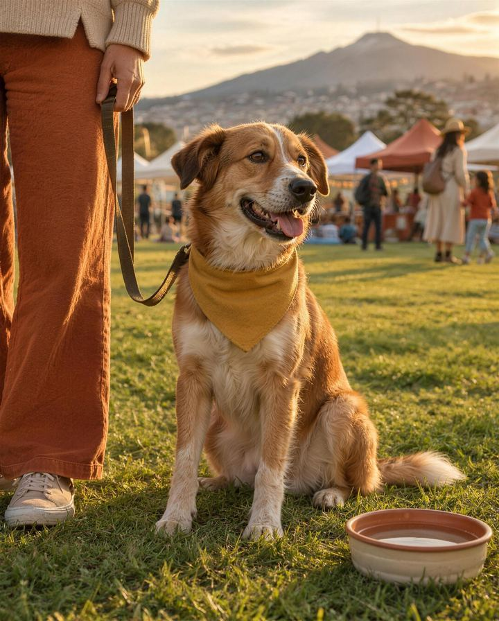
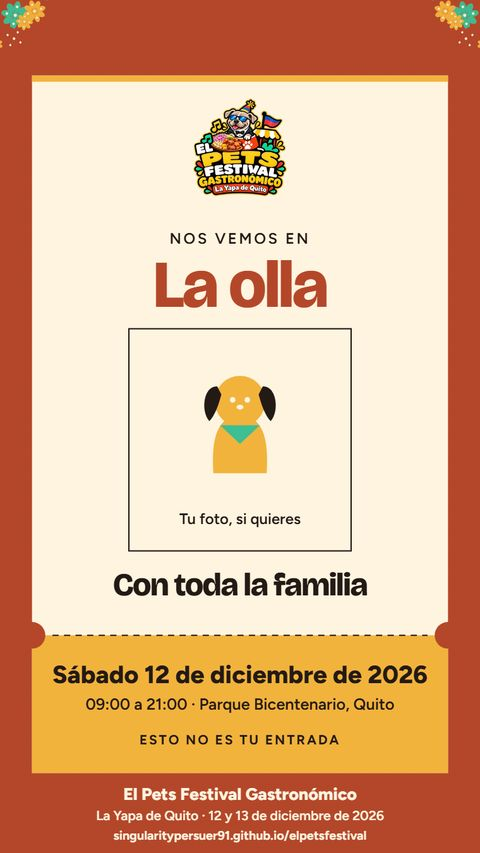

El Pets Festival Gastronómico · La Yapa de Quito
Sábado 12 y domingo 13 de diciembre 2026
El festival canino
Cuatro momentos, un solo festival: de la pasarela de rescatados a las exhibiciones de bully.
Recibe las bases cuando se publiquen. Anotarte no es inscribirte.
- Momentos
- 4, en orden fijo
- Adopción
- Durante el día
- Dónde
- Parque Bicentenario · al aire libre
El programa
Cuatro momentos, en este orden
Abre con los perros que más historia tienen y cierra con la comunidad bully de Quito.
Exhibición American Bully
El cierre del festival canino, con la raza que más convoca a la comunidad.

Los fun shows son recreativos y no federados; ninguna exhibición está afiliada a un registro canino. Horarios, costos, requisitos y cupos se publican antes del festival.
Participa
Recibe las bases para participar
Te escribimos cuando se publiquen las bases, los horarios y los cupos de cada momento. Anotarte no es inscribirte.
Si vienes con tu perro
Que la pase tan bien como tú
Puedes venir con tu perro como visitante, sin participar en ningún momento del programa.
- 01
Con correa o sujeción segura. Bajo tu cuidado todo el tiempo; recoge sus desechos.
- 02
Lleva agua para tu perro. Son horas al aire libre: dale de beber seguido.
- 03
Busca sombra al mediodía. Si el piso quema tu mano, quema sus patas.
- 04
Revisa el pronóstico antes de salir. Es al aire libre: trae abrigo por si llueve.
Los perros están en la explanada al aire libre; ningún perro entra al edificio del Centro de Convenciones.
Nos vemos aquí
El pase de tu perro
Elige el día y tu punto en la pista, ponle el nombre de tu perro y descárgalo para tus historias. La zona canina no es punto de encuentro.
Es un recuerdo para tus historias: no es tu entrada ni tu inscripción.

Preguntas frecuentes
Lo que preguntan los dueños de perros
¿Cuánto cuesta participar?
Se publica con las bases.
¿Necesito entrada para participar?
Se aclara en las bases.
¿Los shows son oficiales?
No. Los fun shows son recreativos y no federados; ninguna exhibición está afiliada a un registro canino.
¿Hay venta de cachorros?
No. Hay adopción responsable durante el día, con la fundación.
¿Puedo ir con mi perro sin participar?
Sí, como visitante, con correa o sujeción segura y bajo tu cuidado. No pueden entrar perros con signos de enfermedad contagiosa.